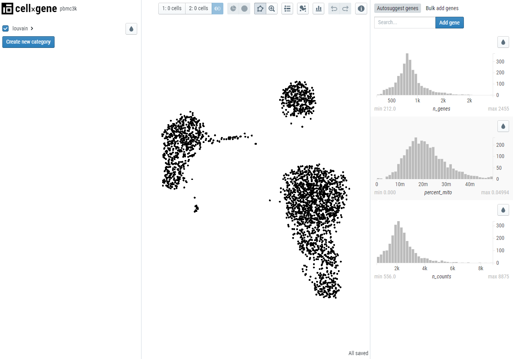

An interactive explorer for single-cell transcriptomics data
Quick start
Installation
Gallery
Demo datasets
Preparing your data
Launching cellxgene
Hosting cellxgene
Annotating data
Methods
Troubleshooting
Roadmap
Contributing (ideas or code)
cellxgene Extensions
Contact & finding help
cellxgene.cziscience.com
Code
Launching cellxgene with your dataset
Quickstart
Once you’ve prepared your data for cellxgene, you can launch the app using
cellxgene launch mydataset.h5ad --open
You should see your web browser open with the following

Note: automatic opening of the browser with the --open flag only works on some platforms (eg, OSX). On other platforms you’ll need to directly point to the provided link in your browser.
Launching from a URL
You can also launch from a URL directly like this:
cellxgene launch https://github.com/chanzuckerberg/cellxgene/blob/main/example-dataset/pbmc3k.h5ad
Support for S3 and GCS is not enabled by default. If you wish to directly access S3 or GFS, install one or both of the following packages:
For example:
pip install s3fs
cellxgene launch s3://mybucket.s3-us-west-2.amazonaws.com/mydata.h5ad
Options for cellxgene launch
For the most up-to-date and comprehensive list of options, run cellxgene launch --help
--open automatically opens the web browser after launching (caveat: only works on some operating systems).
--disable-annotations, --annotations-file & --annotations-dir all have to do with creating new categorical annotations in the application. We have a whole separate page about their usage! :)
--diffexp-lfc-cutoff as explained in the methods, genes are only returned in differential expression if the effect size is above the specified threshold for log fold change. Defaults to 0.01.
--disable-diffexp will disable and hide the Compute Differential Expression feature.
For large datasets, or datasets loaded with the --backed option, computing differential expression may
be extremely slow or use excessive resources on the host computer (e.g., memory thrashing).
Disabling the feature will ensure that this computation is not initiated accidentally.
--backed option instructs cellxgene launch to read the H5AD file in “backed” mode (for more information, see the
anndata.read_h5ad() documentation).
By default, cellxgene will read the entire H5AD will be into memory at startup, improving application speed and performance.
Very large datasets may not fit in memory. The “–backed” mode will read the file incrementally, reducing memory
use, and for large files, improving startup speed. However, this option will also significantly slow
down access to gene expression histograms, and may render differential expression calculations too slow
to use (see --disable-diffexp for an option to disable this feature).
--embedding restricts which embeddings will be available in the viewer. By default, all embeddings specified in anndata.obsm['X_name'] will be loaded; if you have many embeddings, you may wish to restrict this list for a speedier launch.
--title adds a title to the viewer. Defaults to file name.
--about adds a link where users can go to find more infomation about the dataset. Requires https.
--obs-names allows you to specify which column in anndata.obs to use as anndata.obs.index.
--var-names allows you to specify which column in anndata.var to use as anndata.var.index.
--max-category-items omits categorical metadata fields that contain more than N distinct values. Defaults to 1000.